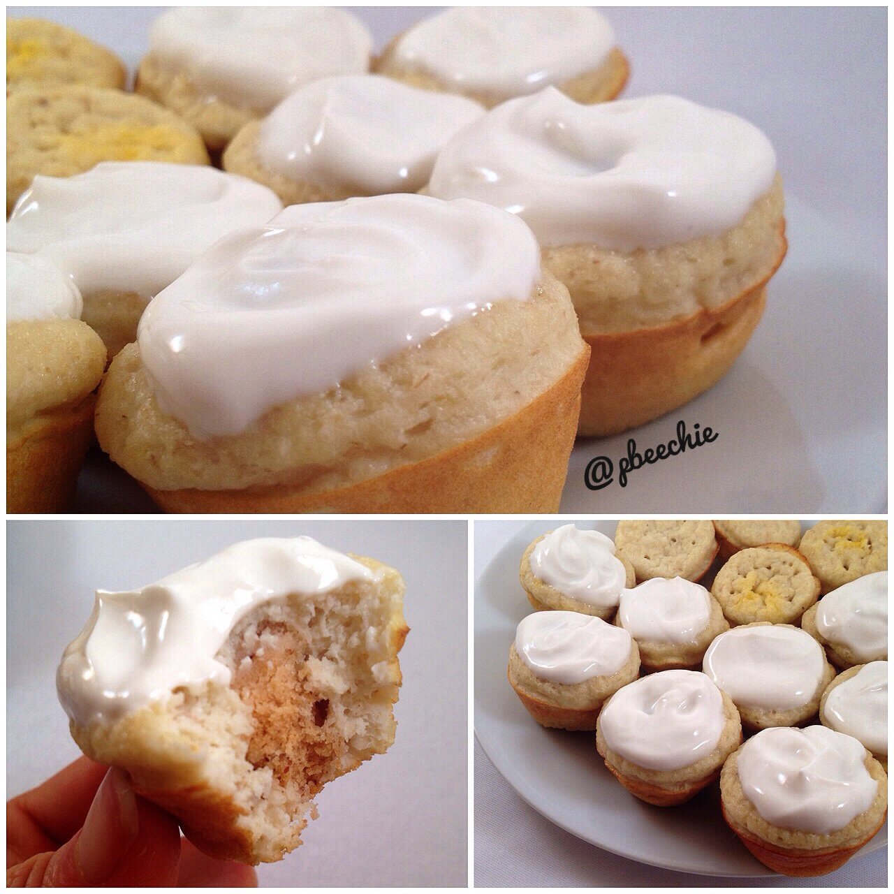

Lemon Cream Pie Mini Muffins
I baked some lemon cream pie mini muffins with a lemon cream icing with my new quest bars! I'm not sure why I've been wanting lemon a lot lately but I'm not complaining. The first time I attempted these, they were dry and I was soo bummed because I have a craving for a particular soft texture. So I tried again and tweaked the recipe and these are amazinggggg!! Dangerously poppable and hard to quit eating. 
- 1/4 cup raw old fashioned rolls oats
- 1/2 cup almond meal
- 2 tbsp coconut flour
- 1/2 scoop vanilla whey protein
- 1/4 cup plain Greek yogurt
- 2 tbsp unsweetened almond milk
- 6 tbsp unsweetened applesauce
- 4 egg whites
- 2 stevia packets
- 1/2 tsp baking powder
- 40 lemon stevia drops
- 1 tsp lemon extrac
- 1 tsp butter extract
- 1/2 tsp vanilla extract
- 1 lemon cream pie quest bar
Lemon Cream Icing (Optional)
- 1/2 cup plain Greek yogurt
- 3/4 tsp vanilla extract
- 30-40 lemon stevia drops
First preheat the oven to 350F. Grind the oats into a flour. Then add the remaining muffin ingredients (except for the quest bar). Blend again. Pour into a sprayed mini muffin pan, forming 24 muffins. Slice 1 lemon cream quest bar into 24 pieces and place one piece in the center of each muffin. Bake at 350F for 11-13 minutes.
Make your optional icing by mixing the greek yogurt, vanilla extract, and lemon stevia. Top the muffins.
For one muffin without icing: 28 calories; 1 g fat, 2 g carbs (1 g fiber), 2 g protein